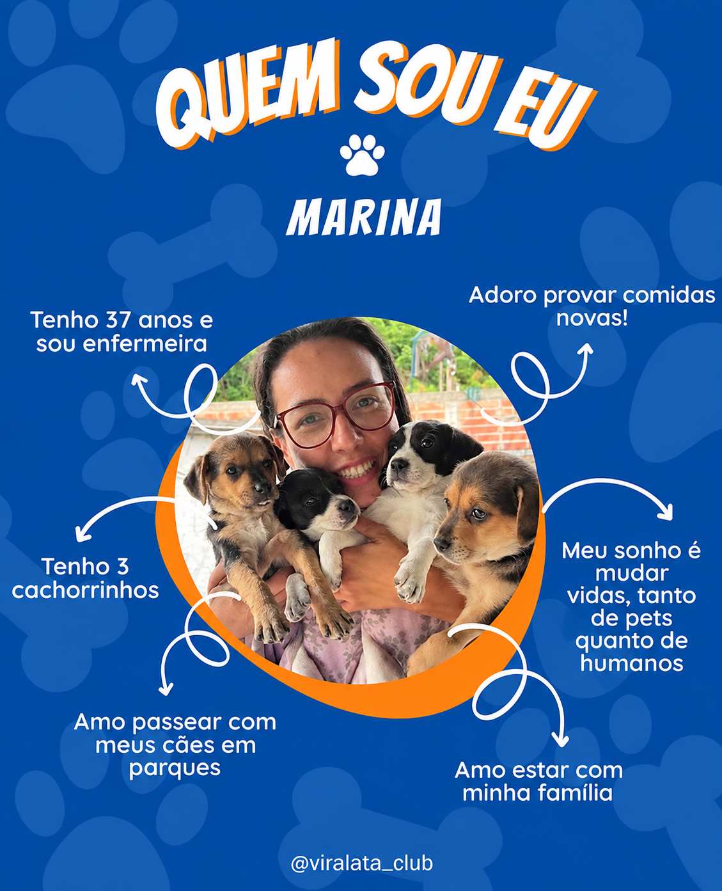
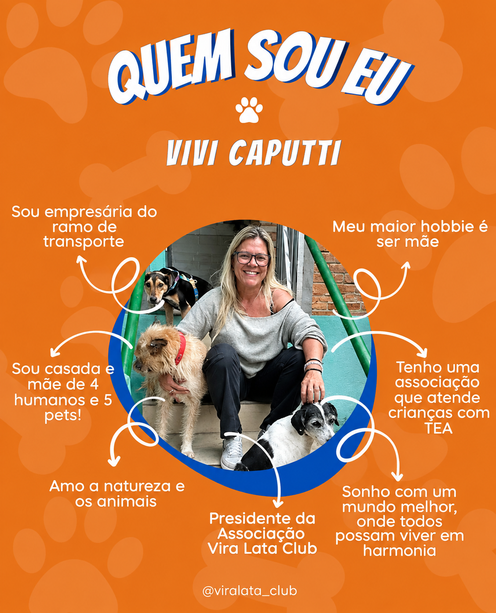

Como você pode ajudar ❤️
💰 Doação
Você pode ajudar através de doações para alimentação e cuidados dos animais.
Entre em contato 📱
Todas as informações sobre nossos cachorros estão em nosso instagram:
 viralata_club
viralata_club
Hoje temos a missão de fazer muitos animais abandonados e vítimas de maus tratos, conhecer o amor e mudar para sempre suas vidas.

O Vira Lata Club nasceu com um próposito simples, mas muito importante: transformar vidas por meio do amor, cuidado e respeito. Começamos com duas pessoas empenhadas em um único objetivo para ajudar e mudar vidas, tanto humanas quanto dos nossos animais. Acreditamos que todo cachorro merece uma segunda chance, independente de sua história, raça ou condição. Contamos com você para fazer parte de todo esse processo de renascimento de cada animalzinho!

Você pode ajudar através de doações para alimentação e cuidados dos animais.
Todas as informações sobre nossos cachorros estão em nosso instagram:
 viralata_club
viralata_club